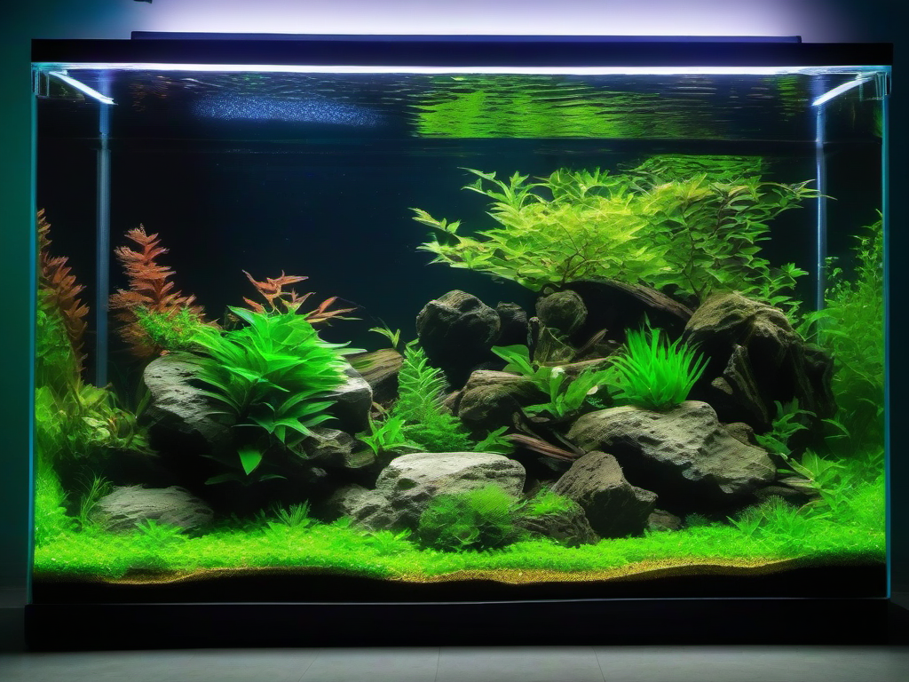

Was ist Aquascaping?
Aquascaping ist mehr als nur Aquarienhaltung – es ist die Kunst, Unterwasserlandschaften zu gestalten. Inspiriert von japanischer Gartenkunst und Landschaftsmalerei, erschaffen Aquascaper Miniatur-Ökosysteme, die wie Gemälde wirken. Berühmte Stile sind der Dutch Style (pflanzenlastig), der Iwagumi ( minimalistisch mit Steinen) und der Nature Style (naturnahe Szenen).
Die Grundlagen: Hardscape
Hardscape bezeichnet alle nicht-lebenden Gestaltungselemente – Steine, Wurzeln und Kies. Diese bilden das Grundgerüst deines Aquascapes. Beliebte Materialien:
- Seiryu-Steine – Kantig, grau mit weißen Adern, sehr beliebt für Iwagumi-Aufbauten
- Drachenstein (Ohko-Stein) – Warme Brauntöne, porös, ideal für natürliche Looks
- Moosstein (Fuji-Stein) – Rundliche Formen mit grünlichem Überzug
- Manzanita-Wurzeln – Verzweigt, hart, sinken sofort – perfekt für Baum-ähnliche Strukturen
🛒 Hardscape-Materialien
Hochwertige Steine und Wurzeln für dein Aquascape-Projekt findest du hier.
👉 Hardscape bei Amazon entdeckenDie goldenen Regeln der Gestaltung
Beim Aquascaping gelten ähnliche Kompositionsregeln wie in der Fotografie und Malerei:
- Drittel-Regel – Teile das Becken gedanklich in 3×3 Felder. Wichtige Elemente platziert du auf den Schnittpunkten.
- Goldener Schnitt – Der Hauptblickpunkt liegt bei etwa 62 % der Beckenbreite.
- Diagonaler Aufbau – Linien führen diagonal durch das Becken, das schafft Tiefe.
- Vordergrund – Mittelgrund – Hintergrund – Eine klare Staffelung verleiht deinem Aquascape Räumlichkeit.
Pflanzenauswahl für Anfänger
Nicht jede Pflanze eignet sich für Einsteiger. Diese Arten sind robust, wachsen zuverlässig und sehen fantastisch aus:
Vordergrund
Hemianthus callitrichoides (HC Cuba) oder Eleocharis parvula (Zwergnadelsimse) bilden dichte Teppiche. Alternativ: Cryptocoryne parva als langsam wachsende Alternative.
Mittelgrund
Staurogyne repens (kompakt, hellgrün) oder Bucephalandra-Sorten (langsam, mit schönen Blüten) sind perfekt für die mittlere Zone.
Hintergrund
Hygrophila polysperma, Rotala rotundifolia oder Vallisnerien wachsen schnell und bilden einen grünen Vorhang im Hintergrund.
Technik fürs Aquascaping
Für ein erfolgreiches Aquascape brauchst du etwas mehr Technik als im Standard-Aquarium:
- CO2-Anlage – Kohlendioxid-Düngung ist für dichten Pflanzenwuchs fast unverzichtbar. Einfach: Bio-CO2 (Zucker+Hefe) oder Druckgasflasche mit Magnetventil.
- Leistungsstarke LED-Beleuchtung – Mit hohem PAR-Wert für kräftiges Pflanzenwachstum. Empfehlung: 30–50 Lumen pro Liter.
- Nährstoffdüngung – Makro (NPK) und Mikro (Spurenelemente) flüssig oder als Depotdünger.
- Leistungsstarker Filter – 6–10-faches Beckenvolumen pro Stunde für klare Sicht und gleichmäßige Nährstoffverteilung.
🛒 CO2- & Beleuchtungstechnik
Die richtige Technik ist der Schlüssel zu sattem Pflanzenwuchs. Hier findest du CO2-Anlagen und LED-Beleuchtung.
👉 Technik bei Amazon ansehenDer Aufbau Schritt für Schritt
- Skizze zeichnen – Plane dein Layout auf Papier, bevor du loslegst.
- Bodengrund einbringen – Nährboden (Soil) als Basis, darüber optional feinen Kies oder Sand.
- Steine und Wurzeln platzieren – Beginne mit den größten Elementen, arbeite dich zu den Details vor.
- Pflanzen einsetzen – Zuerst die Vordergrundpflanzen, dann Mittel- und Hintergrund.
- Einschlämmen – Fülle das Wasser vorsichtig auf (Teller oder Folie auflegen, um den Bodengrund nicht zu verwirbeln).
- Einfahren – Auch beim Aquascaping dauert die Einfahrphase 4–6 Wochen. CO2 und Licht langsam steigern.
Pflege des Aquascapes
Ein Aquascape benötigt regelmäßige Pflege: Wöchentlicher Wasserwechsel (30–50 %), Rückschnitt der Pflanzen, Düngung und Algenkontrolle. Besonders in den ersten Monaten solltest du ein Auge auf Algen haben – sie sind der häufigste Grund für Frust bei Einsteigern.
Fazit
Aquascaping ist eine der schönsten Formen der Aquaristik und bietet unendliche kreative Möglichkeiten. Starte mit einem kleinen Nano-Cube (20–30 Liter), einfachen Pflanzen und einem klaren Layout. Mit der Zeit entwickelst du deinen eigenen Stil und wirst immer sicherer in der Gestaltung.
Lust bekommen? In unserem Einsteiger-Guide erfährst du, welche Technik du für den Start brauchst.